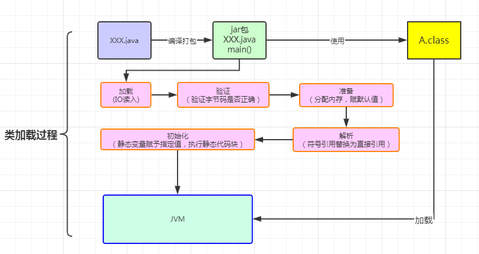
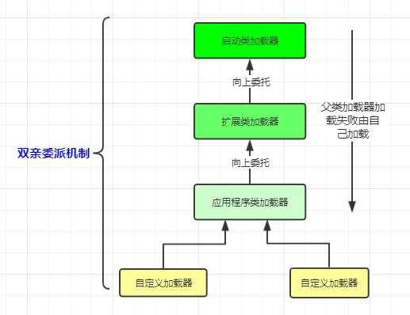
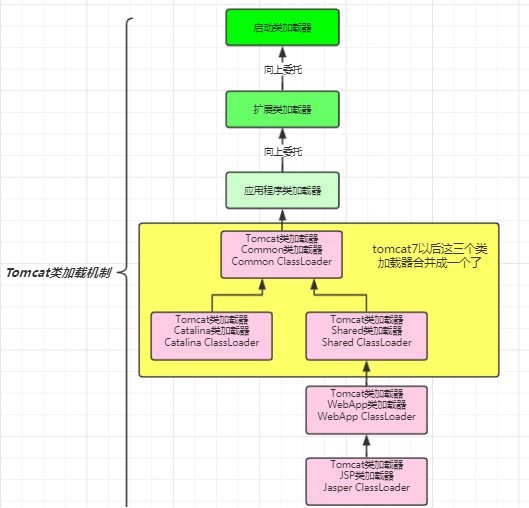

在使用java命令运行主类（main）的时候，首先要通过类加载器将类加载到JVM内存中去。主类在运行过程中如果用到其他的类就会逐步加载这些类。jar包里的类并不是一次性加载的，是使用的时候才加载的。
类加载过程分为以下几步：
加载 》验证 》准备 》解析 》初始化 》使用 》卸载
1、加载：在硬盘上通过IO读入字节码文件，使用到类的时候才会加载，例如调用main()方法，new对象等等。
2、验证：校验字节码文件的正确性
3、准备：给类的静态变量分配内存，并且赋予默认值
4、解析：将符号引用替换为直接引用，该阶段会把一些静态方法替换为指向数据所存内存的地址指针或句柄，即静态链接过程（类加载期间完成）。动态链接是在程序运行期间完成的，将符号引用替换为直接引用。
5、初始化：对类的静态变量初始化为指定值，执行静态代码块。

双亲委派机制就是在加载某个类的时候会先委托父类加载器（爸爸）加载，父类加载器就会继续委托其父类加载器（爷爷辈）加载，如果所有父类加载器都没有找到目标类，则在自己的加载类路径中查找目标类进行加载。简言之就是有事情做的时候，先交给爸爸做，爸爸做不了就交给爷爷做，爷爷也做不了就只能自己做了。也就是拼爹机制。
假设你自己写了一个类Test.当在加载Test的时候，应用程序类加载器会委托扩展类加载器加载，扩展类加载器会委托启动类加载器加载，启动类加载器在加载路径中无法找到Test类，就退回给扩展类加载器，扩展类加载器收到回复，就在自己的加载类路径中查找该类，找不到就退回给应用程序加载器加载。应用程序类在加载类路径中查找要加载的类进行加载。
为什么要设置双亲委派机制呢：
1、避免重复加载
2、沙箱安全机制，避免核心API库被篡改。（比如你自己写了一个String类，是不会加载的）

要实现自定义加载器只需要继承ClassLoader类，该类有两个核心方法，
public class MyClassLoaderTest {
static class MyClassLoader extends ClassLoader {
private String classPath;
public MyClassLoader(String classPath) {
this.classPath = classPath;
}
private byte[] loadByte(String name) throws Exception {
name = name.replaceAll("\\.", "/");
FileInputStream fis = new FileInputStream(classPath + "/" + name
+ ".class");
int len = fis.available();
byte[] data = new byte[len];
fis.read(data);
fis.close();
return data;
}
protected Class<?> findClass(String name) throws ClassNotFoundException{
try {
byte[] data = loadByte(name);
//defineClass将一个字节数组转为Class对象，这个字节数组是class文件读取后最终的字节数组。
return defineClass(name, data, 0, data.length);
} catch (Exception e) {
e.printStackTrace();
throw new ClassNotFoundException();
}
}
}
public static void main(String args[]) throws Exception {
MyClassLoader classLoader = new MyClassLoader("D:/test");
Class clazz = classLoader.loadClass("com.jvm.User1");
Object obj = clazz.newInstance();
Method method= clazz.getDeclaredMethod("sout", null);38 method.invoke(obj, null);
System.out.println(clazz.getClassLoader().getClass().getName());
}
}
运行结果：
=======自己的加载器加载类调用方法=======
com.jvm.MyClassLoaderTest$MyClassLoader
在以下几种情况下需要打破双亲委派机制：
1、同一个容器里面部署多个应用，这几个应用都依赖于同一个第三方类库的不同版本
2、多个应用共享同一个版本的类库。
3、容器依赖的类库与应用程序的类库分开
Tomcat是个web容器， 那么它要解决什么问题：
1. 一个web容器可能需要部署两个应用程序，不同的应用程序可能会依赖同一个第三方类库的不同版本，不能要求同一个类库在同一个服务器只有一份，因此要保证每个应用程序的类库都是独立的，保证相互隔离。
2. 部署在同一个web容器中相同的类库相同的版本可以共享。否则，如果服务器有10个应用程序，那么要有10份相同的类库加载进虚拟机，这是扯淡的。
3. web容器也有自己依赖的类库，不能于应用程序的类库混淆。基于安全考虑，应该让容器的类库和程序的类库隔离开来。
4. web容器要支持jsp的修改，我们知道，jsp 文件最终也是要编译成class文件才能在虚拟机中运行，但程序运行后修改jsp已经是司空见惯的事情，否则要你何用？ 所以，web容器需要支持 jsp 修改后不用重启。
Tomcat 如果使用默认的类加载机制行不行？
答案是不行的。为什么？
1、如果使用默认的类加载器机制，那么是无法加载两个相同类库的不同版本的，默认的累加器是不管你是什么版本的，只在乎你的全限定类名，并且只有一份。
2、默认的类加载器是能够实现的，因为他的职责就是保证唯一性。
3、同1。
4、我们想我们要怎么实现jsp文件的热修改，jsp 文件其实也就是class文件，那么如果修改了，但类名还是一样，类加载器会直接取方法区中已经存在的，修改后的jsp是不会重新加载的。那么怎么办呢？我们可以直接卸载掉这jsp文件的类加载器，所以你应该想到了，每个jsp文件对应一个唯一的类加载器，当一个jsp文件修改了，就直接卸载这个jsp类加载器。重新创建类加载器，重新加载jsp文件。

CommonClassLoader、CatalinaClassLoader、SharedClassLoader和WebappClassLoader则是Tomcat自己定义的类加载器，它们分别加载/common/*、/server/*、/shared/*（在tomcat 6之后已经合并到根目录下的lib目录下）和/WebApp/WEB-INF/*中的Java类库。其中WebApp类加载器和Jsp类加载器通常会存在多个实例，每一个Web应用程序对应一个WebApp类加载器，每一个JSP文件对应一个Jsp类加载器。
从图中的委派关系中可以看出：